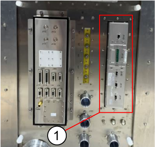

- 00000018WIA302B9280GYZ
- id_20336601.39
- Aug 4, 2025 5:43:40 AM
Installing the penetration panel for remote (off the wall) siting configuration
Installing the penetration panel
Procedure
Installing the coldhead EMI filter on the penetration panel
Procedure
Installing the gradient filter assembly on the penetration panel
About this task
| CAUTION | |
|---|---|
Procedure
- Secure the gradient filter plate to the penetration panel and use the supplied 32 pcs screws (1000-M5C012-31) and 32 pcs washers [(2000-M5-10) and (2203-M5-16)].
Figure 17. Secure the gradient filter to the Penetration Panel 
Item Description 1 Scan room side, cover removed 2 Equipment room side, cover removed 3 Screw holes (32 total)
Installing the DCPS filter on the penetration panel
Procedure
Install the DCPS filter (6859100) by fixing 16 pcs screws (1007-M5C010-31) in the scan room if it has not be pre-installed on the penetration panel.
Figure 21. Install DCPS filter

| Item | Description |
|---|---|
| 1 | DCPS filter (6859100) |